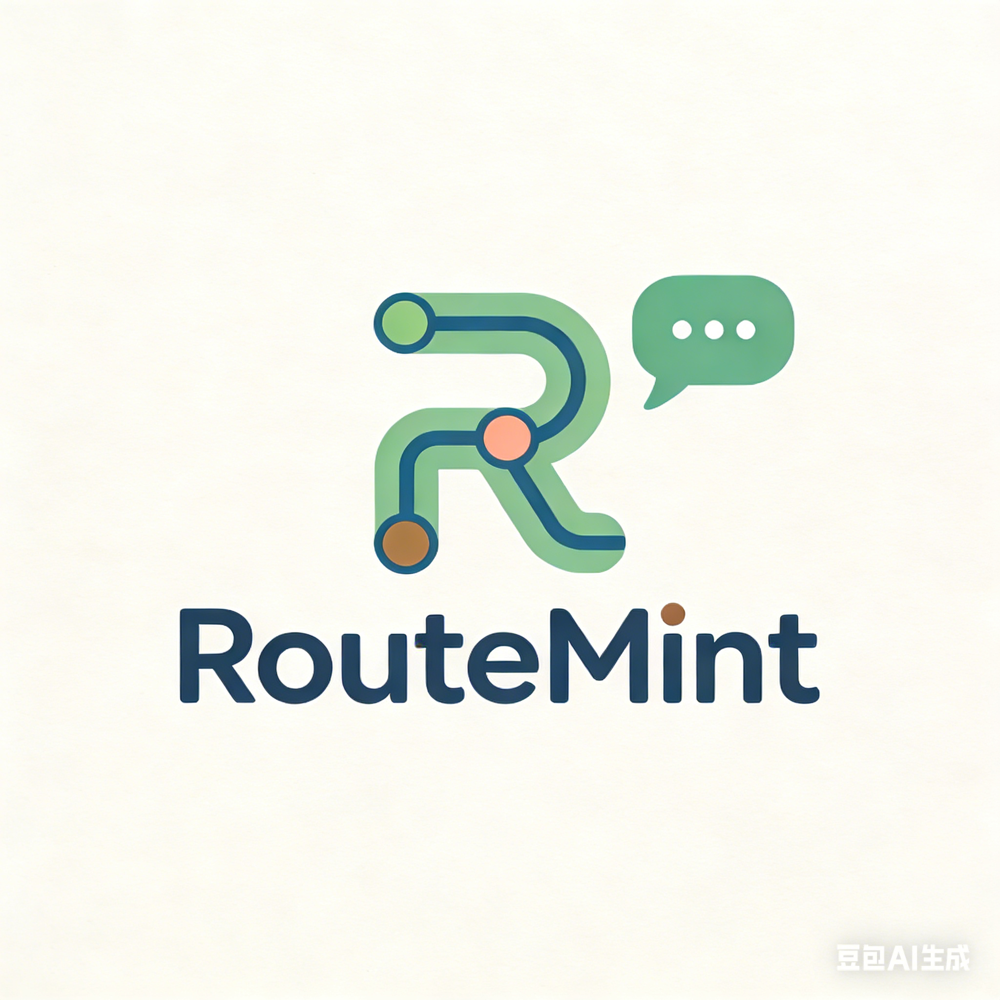

首页
开始提问
看看经历
我的经验
未连接
正在读取这个问题...
-
-
-
-
提问者
-
保证金
0
AVAX
奖励池
0
AVAX
0
条回答
问题背景
-
大家怎么回答
每条回答都会带上经验标签。
没有找到这个问题
确认一下链接里的编号，或者先回到产品首页看看别人的经历。
回到首页
看看经历
Chain setup
链上设置
×
当前钱包
未连接
当前网络
未连接
合约状态
未配置
RouteMint 合约地址
切到 Fuji
连接钱包
保存地址
你可以先连接钱包，再保存合约地址。